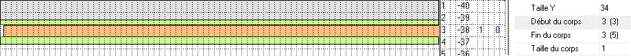

La fenêtre Arbre des tableaux d'un bloc est associée à l’onglet Tableaux de la barre d'onglets verticaux de Xwin. Elle n'est présente que si la fenêtre MDI active est de type "Masque d'imprimante graphique".
Cette fenêtre affiche, sous forme arborescente, chaque objet Tableau dessiné dans le bloc courant du masque, ainsi que les blocs inclus dans ce tableau. Elle est très importante car de nombreuses fonctionnalités applicables aux tableaux se commandent depuis cette fenêtre (par exemple, l'insertion de blocs dans un tableau).
Afficher la fenêtre Arbre des tableaux d'un bloc
Si la fenêtre est cachée, sélectionnez le choix Tableaux du menu Fenêtre (raccourci clavier : Alt+4) ou cliquez sur l’onglet vertical Tableaux. Pour que la fenêtre reste affichée en permanence, épinglez-là.
Structure de l'arbre
La structure de l'arbre est la suivante :
Objet Tableau.
Chaque objet Tableau présent dans le bloc courant du masque est affiché sur une ligne de niveau 1.
Le libellé affiché correspond à sa propriété "Nom du tableau".
Une bulle d'information est affichée au survol des lignes de niveau 1. Elle présente un récapitulatif des positions et tailles du tableau concerné.
Bloc de type Tableau.
Chaque bloc de type Tableau inclus dans le tableau est affiché sur une ligne de niveau 2.
Le libellé affiché correspond au Numéro du bloc, suivi de sa propriété Libellé.
La case à cocher située à gauche du libellé indique si le bloc doit ou non être affiché dans la fenêtre d'édition du masque.
Propriétés du bloc de type Tableau.
La ligne de niveau 3 affiche quelques propriétés du bloc qui précède :
Dbr: suivi du numéro du bloc de débordement, s'il existe.
Chn: suivi du numéro du bloc de chaînage, s'il existe.
Trt si le bloc présente au moins un traitement dans le cadre Traitements de ses caractéristiques.
N: suivi du nombre de lignes du bloc.
D: suivi de la position Début du bloc.
F: suivi de la position Fin du bloc.
Une bulle d'information est affichée au survol des lignes de niveaux 2 et 3. Elle présente un récapitulatif des caractéristiques principales du bloc concerné.
Opérations disponibles à partir de l'arbre
Menu contextuel.
Tout d'abord, le menu contextuel obtenu en cliquant droit sur une ligne de l'arbre propose les choix suivants :
Propriétés du bloc (raccourci clavier Entrée, double clic à la souris).
Affiche la boîte des caractéristiques du bloc correspondant à la ligne cliquée.
A partir de là, la navigation par les boutons >> et << de cette boîte est limitée aux seuls blocs inclus dans le tableau.
Editer le bloc.
Edite le bloc correspondant à la ligne cliquée.
Insérer un nouveau bloc (raccourci clavier Inser).
Crée un nouveau bloc (de type Tableau) et l'insère immédiatement dans le tableau. La boîte des caractéristiques du nouveau bloc est ouverte pour permettre de les modifier. Dans l'arbre, le bloc est inséré derrière le bloc cliqué (clic sur une ligne de niveau 2 ou 3) ou en tant que premier bloc du tableau (clic sur une ligne de niveau 1).
Insérer des blocs existants.
Ouvre une boîte de dialogue proposant la liste de tous les blocs déjà présents dans le masque et susceptibles d'être insérés dans le tableau. Sélectionnez un ou plusieurs éléments de la liste à la manière habituelle puis validez. Dans l'arbre, les blocs sélectionnés sont insérés derrière le bloc cliqué (clic sur une ligne de niveau 2 ou 3) ou en tant que premiers blocs du tableau (clic sur une ligne de niveau 1).
Un bloc inséré de type Mobile est transformé en bloc de type Tableau et ses bornes d'impression, initialement relatives à la page, sont automatiquement converties pour devenir relatives au corps du tableau. Un bloc inséré qui est déjà de type Tableau n'est pas modifié.
Utilisez en particulier ce choix pour faire évoluer un masque conçu au départ sans objet Tableau (voir la rubrique Inclure un tableau dans un masque existant).
Remarque importante : Il est fortement conseillé de prendre connaissance du paragraphe Insertion dans un tableau de blocs déjà existants avant d'exécuter ce choix. Y sont en particulier détaillées les conditions requises pour une conversion correcte des bornes d'impression.
Retirer le bloc (raccourci clavier Suppr).
Le bloc correspondant à la ligne cliquée est retiré du tableau. Il est transformé en bloc de type Mobile, avec une conversion automatique des bornes d'impression inverse de celle effectuée lors d'une insertion de bloc existant (voir choix précédent) : les positions relatives au tableau sont (re)converties en positions relatives à la page. Voir aussi le paragraphe En cas de suppression d'un objet Tableau.
Déplacer le bloc vers le haut (raccourci clavier Maj+Flèche en haut).
Déplace le bloc correspondant à la ligne cliquée dans l'arbre d'une position vers le haut.
L'ordre dans l'arbre détermine également l'ordre d'affichage des blocs à l'intérieur du tableau dans la fenêtre d'édition du masque.
Déplacer le bloc vers le bas (raccourci clavier Maj+Flèche en bas).
Déplace le bloc correspondant à la ligne cliquée dans l'arbre d'une position vers le bas.
L'ordre dans l'arbre détermine également l'ordre d'affichage des blocs à l'intérieur du tableau dans la fenêtre d'édition du masque.
Afficher à partir de ce bloc (raccourci clavier Maj+Clic).
Permet de choisir le bloc qui sera affiché en premier à l'intérieur du tableau dans la fenêtre d'édition du masque.
Ce choix est particulièrement important lorsque la boîte qui inclut l'objet tableau est insuffisamment haute pour permettre l'affichage de tous les blocs du tableau. Vous disposez de trois méthodes pour visualiser les blocs qui débordent : masquer certains blocs précédents, changer ici le bloc présenté en tête de liste ou changer l'ordre des blocs dans l'arbre (voir le paragraphe Affichage des blocs dans la fenêtre d'édition du masque).
Masquer / Démasquer.
Permet respectivement de masquer ou de rendre potentiellement (*) visible le bloc correspondant à la ligne cliquée.
Ce choix équivaut respectivement à décocher ou cocher la case placée à gauche du libellé du bloc dans l'arbre.
(*) En effet, même déclaré comme étant visible, un bloc peut ne pas apparaître à l'intérieur du tableau dans la fenêtre d'édition du masque : voir le choix Afficher à partir de ce bloc.
Masquer tous les autres blocs.
Masque tous les blocs, sauf celui correspondant à la ligne cliquée.
Démasquer tous les blocs.
Rend tous les blocs potentiellement visibles.
Barres d'outils de la fenêtre Tableaux.
Bouton Aide.
Affiche la présente rubrique de la documentation.
Bouton Propriétés du bloc.
Affiche la boîte des caractéristiques du bloc couramment sélectionné dans l'arbre.
A partir de là, la navigation par les boutons >> et << de cette boîte est limitée aux seuls blocs inclus dans le tableau.
Bouton Déplacer le bloc vers le haut.
Déplace le bloc couramment sélectionné dans l'arbre d'une position vers le haut.
L'ordre dans l'arbre détermine également l'ordre d'affichage des blocs à l'intérieur du tableau dans la fenêtre d'édition du masque.
Bouton Déplacer le bloc vers le bas.
Déplace le bloc couramment sélectionné dans l'arbre d'une position vers le bas.
L'ordre dans l'arbre détermine également l'ordre d'affichage des blocs à l'intérieur du tableau dans la fenêtre d'édition du masque.
Bouton Réduire tous les éléments de l'arbre.
Réduit tous les éléments de l'arbre.
Bouton Expanser tous les éléments de l'arbre.
Expanse tous les éléments de l'arbre.
Affichage des blocs dans la fenêtre d'édition du masque
Par défaut, les blocs inclus dans un tableau sont présentés à l'intérieur du tableau, dans l'ordre où ils apparaissent dans l'arbre. Mais le nombre de blocs affichés à l'intérieur du tableau est limité par la taille de la boîte de l'objet Tableau. Il est donc possible que l'ensemble des blocs du tableau ne puisse être affiché simultanément.
Le libellé des blocs actuellement visibles est affiché en gras dans l'arbre.
Vous disposez de trois méthodes pour déterminer les blocs à visualiser :
Masquer les blocs que vous ne voulez pas voir.
Pour cela, utilisez les choix Masquer et Masquer tous les autres blocs du menu contextuel de l'arbre ou décochez les cases situées à gauche du libellé des blocs à masquer.
Changer le bloc affiché en premier à l'intérieur du tableau.
Pour cela, utilisez le choix Afficher à partir de ce bloc du menu contextuel de l'arbre.
Changer l'ordre d'affichage des blocs.
Pour cela, utilisez les choix Déplacer le bloc vers le haut / vers le bas du menu contextuel de l'arbre ou cliquez sur les boutons correspondants de la barre d'outils de la fenêtre Tableaux.
Sélection d'un bloc dans l'arbre ou dans la fenêtre d'édition du masque
Si vous sélectionnez un bloc dans l'arbre, il est également "sélectionné" dans la fenêtre d'édition du masque (s'il est présent) : le trait horizontal en haut du bloc passe en rouge, de même que les traits obliques affichés en marge du bloc.
Réciproquement, si vous cliquez à l'intérieur d'un bloc de type Tableau dans la fenêtre d'édition du masque, il est sélectionné dans l'arbre.
De plus, si vous sélectionnez l'objet tableau ou l'un des objets placés dans l'en-tête du tableau dans la fenêtre d'édition du masque, le tableau est sélectionné dans l'arbre.
Insertion dans un tableau de blocs déjà existants
Le choix Insérer des blocs existants du menu contextuel permet de sélectionner un ou plusieurs blocs déjà présents dans le masque, dans le but de les transférer dans un tableau. Ce choix est particulièrement intéressant pour faire évoluer un ancien masque (sans objet Tableau) vers une version de ce masque incluant l'objet Tableau.
Blocs éligibles.
Tous les blocs du masque ne sont pas susceptibles d'être inclus dans le tableau. La liste des blocs ne propose donc que les blocs éligibles. En sont exclus :
Les blocs de type Fixe ou de type Fond.
Les blocs contenant eux-mêmes un tableau. En effet, l'imbrication de tableaux n'est pas autorisée.
Les blocs de type Tableau déjà inclus dans un autre tableau. En effet, un même bloc ne peut pas appartenir à plusieurs tableaux.
Les blocs auxquels on a associé un bloc auxiliaire. En effet, un bloc Tableau ne peut pas avoir de bloc auxiliaire.
Les blocs auxiliaires.
Conversions en bloc de type Tableau :
Les blocs initialement de type Tableau ne sont pas modifiés.
Les blocs initialement de type Mobile sont transformés en bloc de type Tableau.
De plus, les valeurs des bornes d'impression (Position Début et Fin), initialement relatives à la page, sont converties pour devenir relatives au corps du tableau.
Les conversions effectuées sur les valeurs des positions en conservent le signe :
Une position initialement positive (exprimée relativement au début de la page) reste positive (exprimée relativement au début du tableau).
La position 1 signifie que le bloc s'imprime sur la 1ère ligne (de la page ou du corps du tableau).
Une position initialement négative ou nulle (exprimée relativement à la fin de la page) reste négative (exprimée relativement à la fin du tableau).
La position 0 signifie que le bloc s'imprime sur la dernière ligne (de la page ou du corps du tableau).
Conditions préalables à une conversion correcte des bornes d'impression.
Ce point est très important pour produire, après l'introduction de l'objet Tableau dans le masque, un état imprimé qui se rapproche au plus près de l'état précédemment obtenu sans l'objet Tableau (en particulier pour que la page avec tableau présente exactement les mêmes blocs que la page sans tableau).
Il est impératif qu'au moment d'exécuter les insertions :
La propriété Nombre de lignes (de la page) soit correctement renseignée dans les paramètres généraux du masque.
En effet, tous les calculs effectués sur les bornes négatives ou nulles (exprimées relativement à la fin de la page) se basent sur la valeur de ce paramètre.
Le corps du tableau soit correctement dimensionné et positionné dans son bloc.
En pratique, il faut que la première et la dernière ligne du corps du tableau soient précisément placées à l'endroit où étaient imprimées la première et la dernière lignes détail dans l'édition sans tableau.
Attention aux alignements sur une frontière de ligne :
Une page est conventionnellement découpée en lignes (de 9 orteils en standard). Un bloc est toujours imprimé sur une frontière de ligne et occupe toujours une nombre entier de lignes. Les blocs de type Tableau ne font pas exception à la règle et il faut en tenir compte pour déterminer les limites d'impression effectives de ces blocs à l'intérieur du tableau. Prenons un exemple :

Activez l'option Affichage des grilles (menu Outils : Options, volet Editeurs de masques).
Cette option demande l'affichage d'une grille quadrillant l'écran en lignes et colonnes. A droite de la clip grille, apparaissent aussi 4 colonnes de valeurs :
La première colonne affiche les ordonnées (positives) des lignes relativement au début de la page (début à 1).
La valeur affichée en première ligne correspond à la Position Début du bloc (spécifiée dans les caractéristiques du bloc courant).
La seconde colonne affiche ces mêmes ordonnées (négatives ou nulle) exprimées relativement à la fin de la page.
En face des tableaux, la troisième colonne affiche les ordonnées (positives) des lignes relativement au début du tableau (début à 1).
En face des tableaux, la quatrième colonne affiche ces mêmes ordonnées (négatives ou nulle) exprimées relativement à la fin du tableau.
Le cadre Coordonnées des propriétés du tableau contient les informations suivantes :
Début du corps : numéro de la ligne (début à 1) où démarre la partie utile du corps du tableau.
Entre parenthèses, le nombre d’orteils "perdus" en haut après l'en-tête.
Fin du corps : numéro de la ligne (incluse) où finit la partie utile du corps du tableau.
Entre parenthèses, le nombre d’orteils "perdus" en bas.
Taille du corps : taille utile du corps du tableau en nombre de lignes.
Vous pouvez aussi forcer un pas de déplacement vertical des objets à la souris (option Déplacement de la souris - Vertical au menu Outils : Options, volet Editeurs de masques).
Exemple : un pas vertical de 9 orteils permet de cadrer tous les objets sur une frontière de ligne.
Mise en oeuvre de l'insertion d'un ou plusieurs blocs.
Dans ce paragraphe, on partira du principe que plusieurs blocs ont été sélectionnés pour être insérés dans un tableau et qu'il s'agit de blocs de type Mobile dont les bornes d'impression (positions Début et Fin dans la boîte de dialogue des caractéristiques du bloc) doivent être converties. Xwin procède à l'opération d'insertions en deux phases :
Xwin contrôle d'abord, bloc par bloc, la cohérence des bornes converties.
En cas de problème, un message est affiché dans une boîte de message. S'il s'agit d'une erreur, le bloc ne sera pas traité. S'il s'agit d'un simple avertissement, l'insertion du bloc peut être confirmée ou invalidée. Dans tous les cas, l'opération peut être entièrement abandonnée (bouton Annuler).
Si l'opération n'a pas été globalement annulée, Xwin réalise les insertions qui n'ont pas fait l'objet d'un message ou qui ont été confirmées. Un récapitulatif des conversions est présenté dans la fenêtre des Messages (en bas de l'écran de Xwin).
Deux types de problème peuvent survenir lors d'une conversion :
Les bornes converties sont erronées.
Les bornes d'impression recalculées relativement au tableau placent le bloc en dehors des limites du corps du tableau (les valeurs converties sont extérieures au corps du tableau ou le bloc déborde du corps du tableau, ...). L’insertion du bloc est invalidée, avec affichage d'un message d'erreur.
Les bornes converties sont potentiellement incorrectes.
Tout en restant valides, les nouvelles bornes d'impression ne correspondent pas exactement aux bornes qui prévalaient sans l'objet tableau.
Pour effectuer ce contrôle, Xwin convertit d'abord les bornes initiales relatives à la page en bornes relatives au tableau puis effectue la conversion inverse. Si les dernières valeurs calculées ne sont pas strictement identiques aux valeurs initiales, Xwin signale un problème potentiel en affichant un message d'avertissement. L'insertion peut alors être confirmée ou refusée.
Remarque :
Cet avertissement ne doit pas arriver lorsque les positions Début et Fin initiales délimitent exactement (*) les bornes d'impression du bloc dans la page et si le tableau est parfaitement positionné et dimensionné. Le contrôle permet de s'assurer que l'état obtenu avec le tableau sera identique à celui préexistant sans le tableau.
(*) L'avertissement peut ne pas être significatif, en particulier parce qu'il n’est pas obligatoire que la borne Début d'impression soit initialement "exacte". Prenons l'exemple d'un bloc Mobile imprimé pour la première fois dans la page derrière un bloc Fixe de 5 lignes. Normalement, la borne Début devrait valoir 6. Toutefois, rien n'interdit de spécifier une valeur positive quelconque inférieure à 6, avec un état imprimé identique. Dans ce cas, un avertissement aura lieu car une anomalie potentielle sera détectée par Xwin.
Dans certains cas, il est possible de ne pas tenir compte de cet avertissement et de confirmer l'insertion. Xwin limitera les bornes converties de manière à confiner l'impression du bloc à l’intérieur du corps du tableau. Par contre, l'état avec tableau pourra différer légèrement de l'état sans tableau. Par exemple, le nombre de lignes détail imprimées sera réduit de 1 si l'en-tête du tableau (cadré sur une frontière de ligne) est agrandi de une ligne par rapport au cadre d'en-tête initial.
Conseil :
Dès qu'un message est affiché en phase un, il se peut que le corps du tableau ne soit pas parfaitement dimensionné ou positionné dans le bloc (voir le paragraphe Conditions préalables à une conversion correcte des bornes d'impression). En cas de doute, abandonnez globalement les insertions (bouton Annuler) et vérifiez le dessin du tableau avant de relancer l'opération.
Exemples :
Un exemple détaillé d'inclusion de blocs existants dans un tableau est donné à la rubrique Inclure un tableau dans un masque existant.
Un exemple ne respectant pas les Conditions préalables à une conversion correcte des bornes d'impression est donné dans cette même rubrique, au paragraphe Si l'objet Tableau diffère du cadre du masque d'origine.
En cas de suppression d'un objet Tableau
Lorsqu'un objet Tableau est supprimé (suppression proprement dite, Couper d'un tableau, suppression d'un bloc contenant un tableau), chaque bloc inclus dans ce tableau est transformé en bloc de type Mobile et ses bornes d'impression relatives au tableau sont automatiquement reconverties en positions relatives à la page.
Attention, si les valeurs initiales relatives au tableau ou si les positions du bloc contenant le tableau sont incorrectes au départ, le calcul des positions relatives à la page donnera des résultats erronés (par exemple, une position en dehors des limites effectives de la page). Les anomalies ne sont pas ici signalées par une boîte de message mais un récapitulatif des conversions est affiché dans la fenêtre des Messages de Xwin.